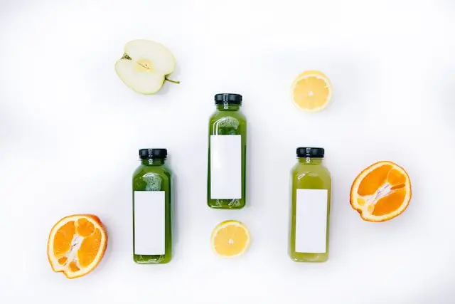

Articles / Tips & trends
Give yourself a health boost – try our fruity health boosters!
2025-10-15 · New products, New products

Original public content from Yen Chuan. Product claims and specifications remain subject to confirmation by the company.
If there’s one huge trend going on with food right now, it’s “Better for you” – food and drinks that’s not only filling, but also gives you the nutrients needed to liven up your day.
From protein added to practically everything to soft drinks topped up with herbs and mushrooms, anything can be a energy-boosting pick-me-up. And yes, this includes bubble tea!
Want to enjoy your boba with benefits? Our fruity health boosters is the answer. Read on to learn more!

Taste the difference!
Our fruity health boosters are jam-packed with vitamins, plant extracts, collagens, and other health goodies to keep you going.
What’s more, they’re formulated with natural colourings and flavourings – none of that artificial stuff. Enjoy a refreshing drink, guilt-free!
Our Health Boosters
Our health boosters come in 6 delicious flavours, each with their own cocktail of nutrients!
Sea-breeze Pomelo
With added Vitamin B-complex, D-Ribose and HMB-Ca, give your muscles a boost with this summery drink.
Give it a sip, and you’re ready to ride the waves!
Watermelon Oolong
Looking for radiant, springy skin? This drink is for you!
Loaded with fish-skin collagen, grape seed and melon extract, and Hokkaido Golden Mushroom extract, the drink helps repair and moisturize your skin.
Orange Yakult
Feeling your eyes tire out from staring at a screen? Give them an orange-flavoured refresher!
This drink contains Marigold extract (contains Lutein), Zeaxanthin and Red Algae extract (contains Astaxanthin), which helps prevent eye diseases.
Sweet Summer Lychee
Feeling those joints creaking? Don’t worry, give this drink a sip!
This booster is jam-packed with Calcium, Vitamin D3, Plant-based Glucosamine and Natto Extract (containing Vitamin K), all contributing to healthy bones and joints.
Bubbly Berry
Watching your weight but still want a delicious, nutritious treat? This drink is for you!
Featuring Vitamin C, Vitamin B Complex, Magnesium, Fructooligosaccharides and Maltodextrin, this drink is a cocktail of vital nutrients packed in a lightweight calorie footprint.
Orange Yakult
As flu season approaches, it’s important to keep your immune system up and running. This drink helps with that!
The drink contains a mix of nutrients crucial for a healthy immune system, including Vitamin C, Vitamin B6, Yeast Zinc, Yeast Selenium, Galacto-oligosaccharides and Oat Beta-Glucan.
How do you use our health boosters?
These health boosters come in handy beverage powders, simply mix with water and you’re done!
For a 500ml drink, all you need is around 40g powder and 480ml water, topped up with ice cubes. Feel free to substitute water with various teas for a refreshing fruit tea.
Want a dash of extra colour and flavour? Drop a couple fruit slices in and turn it into a fruit punch!
Want to give it some bubble tea flair? Crystal boba and sweet basil seeds offer some chewy/crunchy goodness while light on the scales. Aiyu jelly is also a great choice, especially during summertime!
Get boosting!
Jump-starting a healthier life can’t get any easier. Enjoy it yourself, or mix up a batch of fruit boba tea for family and friends!
Ready to begin? Drop us a message!